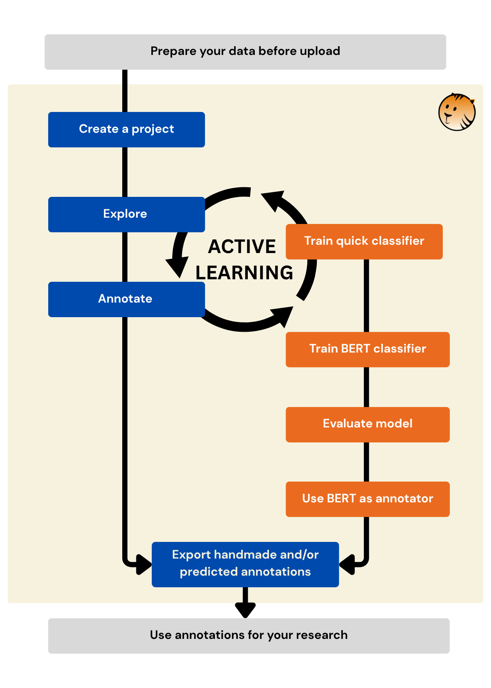
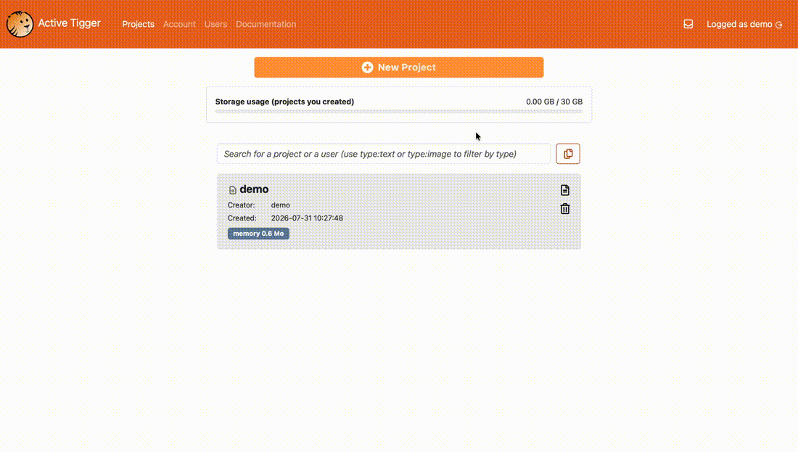
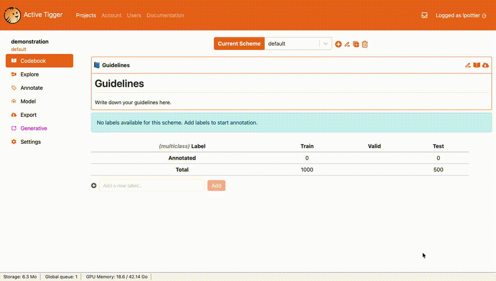
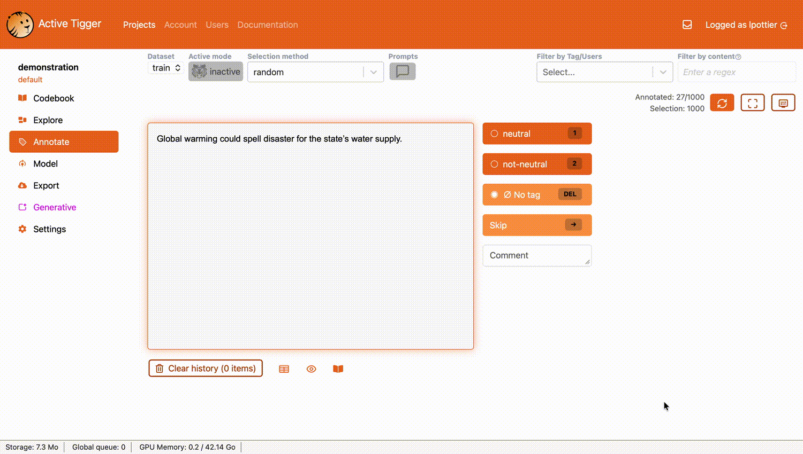
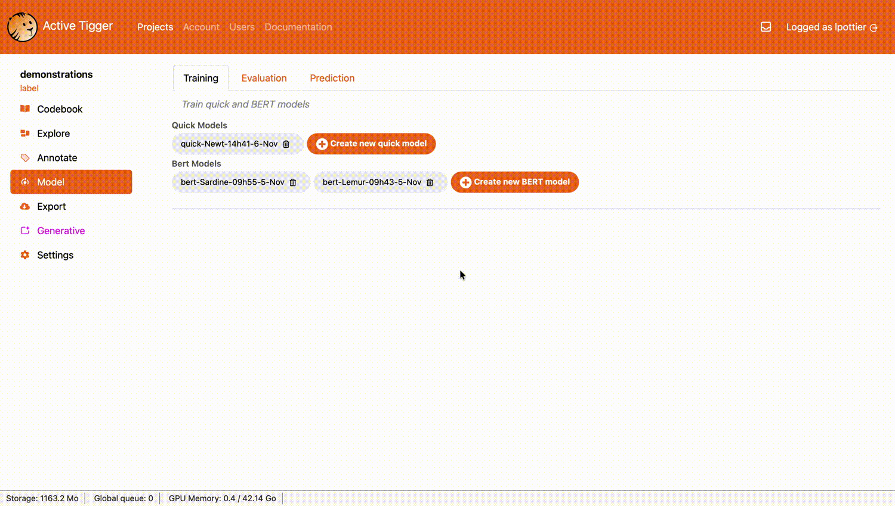
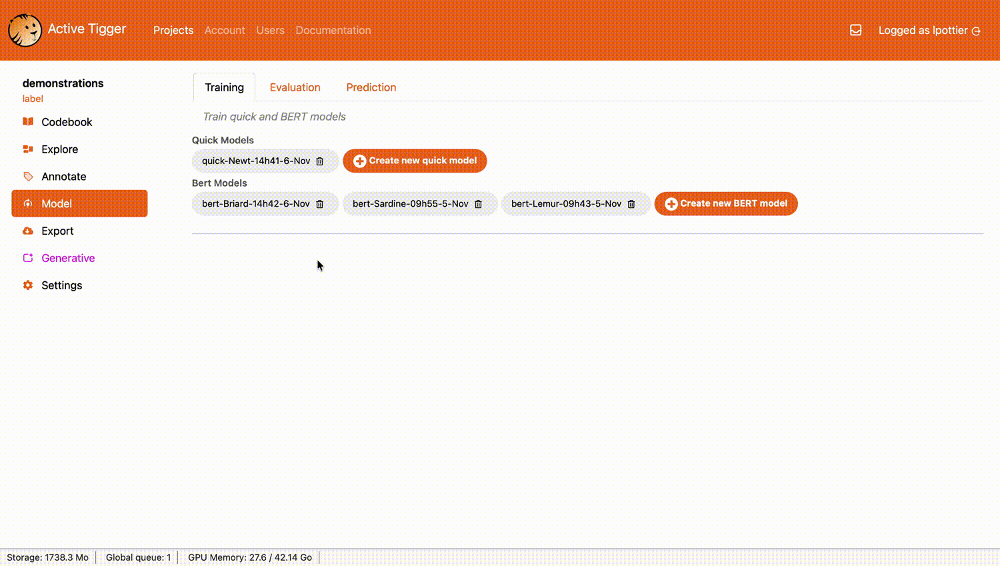

Workflow at a glance
Let's get started with ActiveTigger ! To use the app, you will need:
- A web browser through which you can access ActiveTigger.
- A valid ActiveTigger account from an instance.
- A tabular dataset (CSV, XLSX, or Parquet) where each row is a text unit to annotate. If you prefer, you can use the Quickstart case which includes a downloadable example dataset.
Many use cases are possible, as ActiveTigger offers several methodological options. To provide an example, we structure this guide around a common problem in social science research: having more textual data than you could manually analyze.
Quickstart Case
Let's say you have a dataset of thousands of newspaper sentences talking about the environment. You want to classify them into "neutral" and "not-neutral" categories, depending on whether they are factual or normative. It would take you a very long time to classify this manually.
An ActiveTigger project usually has the following workflow:

After following this Quickstart, you will be able to use ActiveTigger to:
- Make the manual annotation process easier
- Train a classifier model that can predict labels over unannotated data.
- Extend your coding scheme automatically on the entire dataset.
- Export your final predictions.
1. Create a project

Click on New Project, choose "Load dataset from disk" and fill in:
- Project name — A unique name for your project
- Load dataset from disk — Upload your CSV, XLSX, or Parquet file, with each text element in a separate row.
- Id column — Specify the unique identifier for each row. If there is no such column in your dataset, pick "Row number"
- Text columns — Specify the column that contains the text you wish to annotate
- Language of the corpus — Specify the language of your text data (used to select relevant models, but you can also work in languages not listed here)
- Number of elements in the train set — Specify how many elements you wish to import in the training dataset
Optional:
- Existing annotations — If your file already contains labels, you can import them.
- Validation set — A held-out sample used later to compare your models.
- Test set — Another held-out sample used to evaluate your final model.
Quickstart Case
To download the example dataset, click on "Detecting Stance in Media On Global Warming" under the "Load Dataset from disk" option.
Select "Row number" as id, "sentence" as text column and "English" as language. In our example, we will use a size of 1750 for the train set, 150 for the validation set and 150 for the test set. You do not need to understand why we chose these figures for now (eventually you will learn about setting set sizes), but you can read more about set types.
2. Define your annotation scheme

Under the Codebook tab, we can go to the next step: defining our labels.
A coding scheme is the set of labels you'll use to annotate. One scheme is created by default.
Click Add a new label..., type your label name, and click Add. Repeat for each label.
Quickstart Case
In our case, we create two labels: "neutral" and "not-neutral".
Consider writing a short codebook explaining how to distinguish labels, especially if you work with collaborators.
What is a good scheme?
For a classification task, a good scheme is a scheme for which labels can be assigned without ambiguity to texts. Think about human annotators: are they able to decide which label to put on each text? When you start with a research question, you tend to have complex schemes with a lot of labels. The risk is that some of those labels are ambiguous. We advise a reductionist approach, testing each label with a binary scheme/classifier.
3. Annotate

Next, let's start annotating! Go to the Tag tab. The interface shows you one text at a time. Read it, click the appropriate label, and move on. ActiveTigger picks the next element automatically.
Initial selection modes:
- Random (recommended to start): picks elements at random.
- Fixed: follows the original order of your dataset.
You can also:
- Add a comment to any annotation (useful for edge cases)
- Go back to re-annotate previous elements
- Skip an element to return to it later
In a session, you can only see each element once to avoid repetition. You can clean the history with the button Clear history (3 items)
Try Active Learning
Going through the dataset in a random order can be time-consuming, as it may take a while to find enough examples of each category. This is where active learning can come in handy.
In "active" mode, a model predicts what label is the likeliest for a given text, giving you the possibility to use this prediction as an information, either to validate it or correct it. This can help to speed up the annotation process, either in predicting labels or identifying critical cases (read more about active learning).
To enable the Active Mode, you need to first train a Quick Model. Go to Model → Create new quick model. In the Tag tab, click on the little tiger face under Active Mode.
When active learning is on, it unlocks new methods to pick the next element, based on the (high or low) certainty of the prediction. Read more.
4. Train and compare BERT classifiers

If you want to strengthen your prediction, you can move to training a BERT classifier, which takes more time than Quick models but may increase the quality of results.
What is a BERT classifier?
A BERT-based classifier uses your annotations to learn what kinds of texts should go in each category. Once trained, the model can be used to infer the labels of unannotated text inputs.
Go to Model → Create new BERT model. For a first model, you can use the default parameters but you may need to change them later.
The classifier learns how to make predictions. It is not perfect, and its error rate will depend on the quality of the training.
Most of the time, you will want to improve this model. To do so, you will annotate more and train other models, comparing the quality of their predictions on a dedicated evaluation dataset called the validation dataset. You will be able to monitor how well each model does on this set using a confusion matrix and dedicated scores, available in the Evaluate tab. To see these, click on Compute predictions, then select the validation set.
Learn more on how to correctly train and evaluate a model and check the FAQ page for additional pieces of advice.
5. Test and use your BERT classifier

Once you are satisfied with the quality of a model, you want to generalize its prediction to the entire dataset. To be sure to have good quality predictions, have a last evaluation with a new set, the test dataset, that will give you robust metrics. And then you are good to go.
- Click on the Evaluation tab, then select the Test set.
- To extend the predictions, click on the Prediction tab, then on Prediction on the entire dataset.
6. Export
Lastly, export your annotations, models and predictions to carry on the analysis and facilitate reproducibility. See Export page for more information.
Best practices
In practice, going through each of these steps requires iteration and careful thinking about your annotation strategy. In this documentation, you'll find more detailed information about each key feature of ActiveTigger as well as advice on best practices.
You may also be curious about:
- How to manage collaboration through adding multiple users to your project and compare your annotations
- How to use topic models to get an overview of what your dataset is about
- How to use generative AI tools in ActiveTigger
Get in touch
If you encounter a bug or have a suggestion, feel free to raise an issue on Github.
We also have an active Discord community used to signal troubleshooting, exchange ideas, and ask questions about ActiveTigger.
For any other inquiry, please reach out at css@ensae.fr.